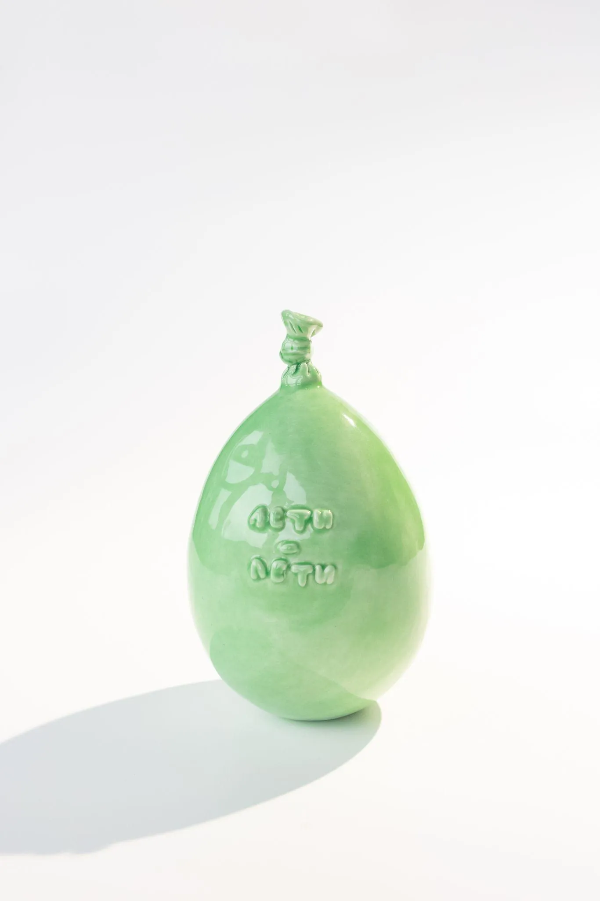
«А можно забрать его домой?» Зелёный
2025 · глина, глазури; литьё, ручная лепка
«А можно забрать его домой?» — серия керамических воздушных шариков Ольги Симоновой (sim.play.art), 2025 год. Шарики выполнены литьём и ручной лепкой из глины и покрыты глазурями девяти цветов: зелёной, оранжевой, голубой, бирюзовой, жёлтой, лиловой, синей, серо-голубой и красной.
| Год | 2025 |
|---|---|
| Материалы | глина, глазури |
| Техника | литьё, ручная лепка |
| Размер | около 18 × 14 см |
| Цвета | зелёный, оранжевый, голубой, бирюзовый, жёлтый, лиловый, синий, серо-голубой, красный |
| Продолжение | фотопроект и настенные объекты «Рано или поздно» (2026, в работе) |

Сам по себе воздушный шарик ничего не стоит — ценен момент счастья, когда он появляется в руках. «А можно взять его с собой?» — трепетный вопрос перед обладанием радостью. И вот ты несёшь его в руках — частичку праздника домой.
Продолжение серии — «Рано или поздно»: фотопроект-исследование на ходу, поиск случайных сдутых находок на улицах, и настенные объекты около 80 см, которые сейчас в работе.

2025 · глина, глазури; литьё, ручная лепка
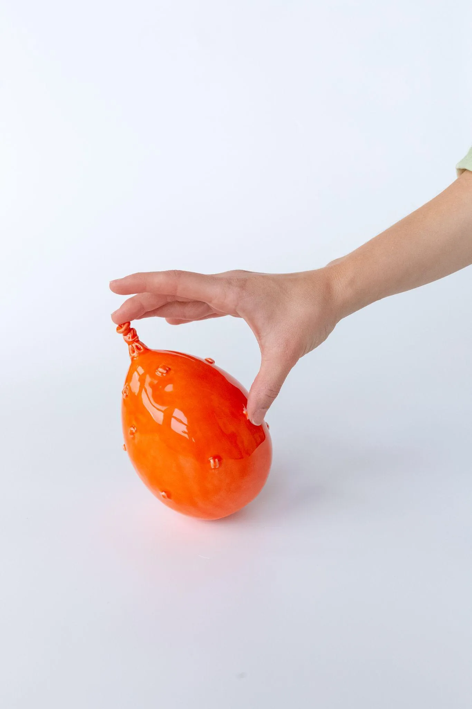
2025 · глина, глазури; литьё, ручная лепка
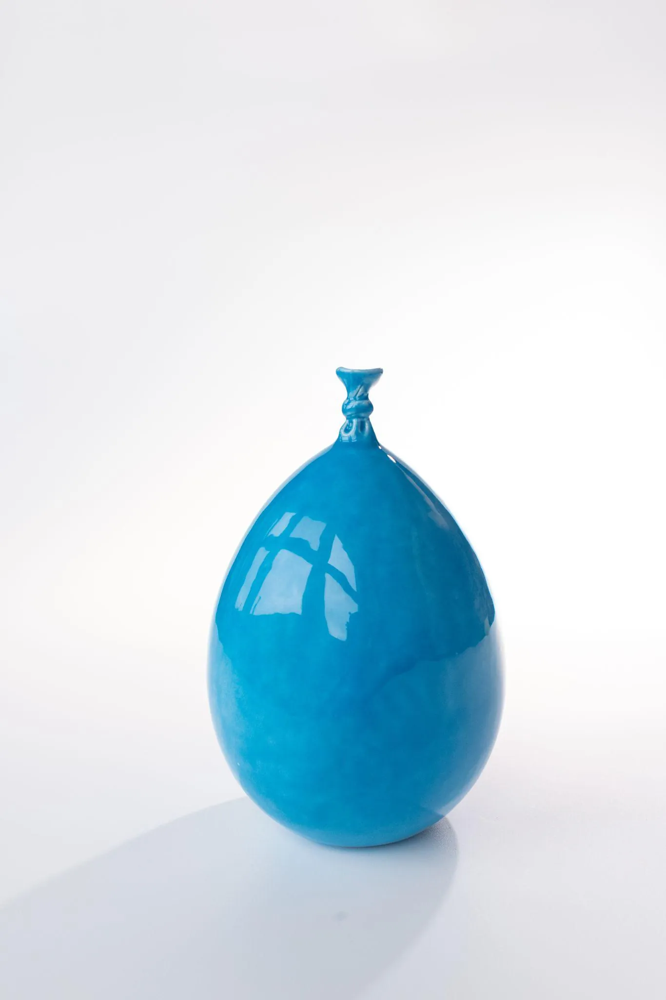
2025 · глина, глазури; литьё, ручная лепка
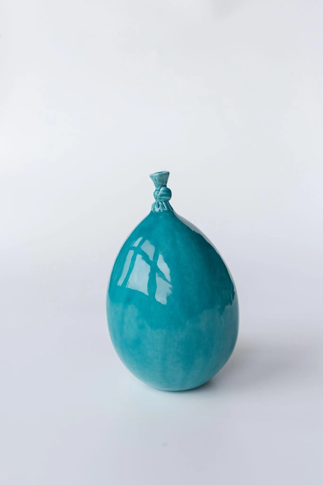
2025 · глина, глазури; литьё, ручная лепка
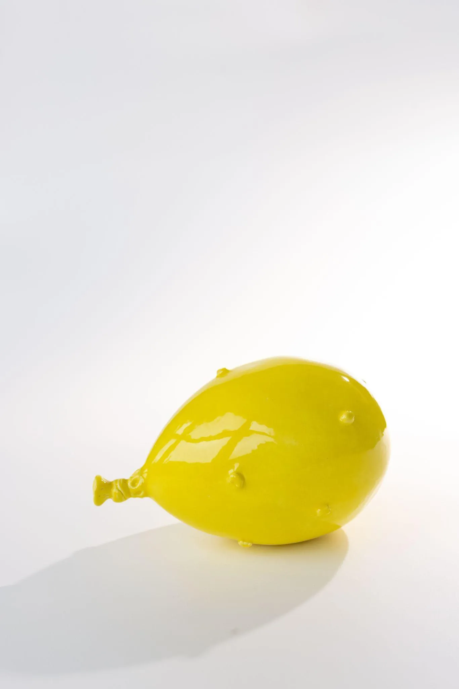
2025 · глина, глазури; литьё, ручная лепка
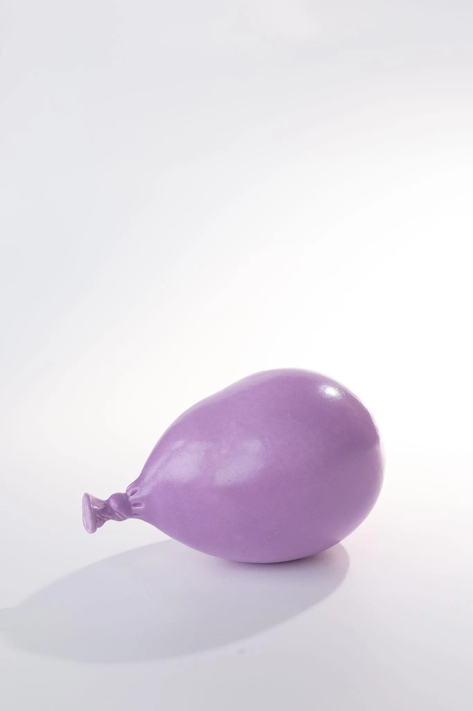
2025 · глина, глазури; литьё, ручная лепка
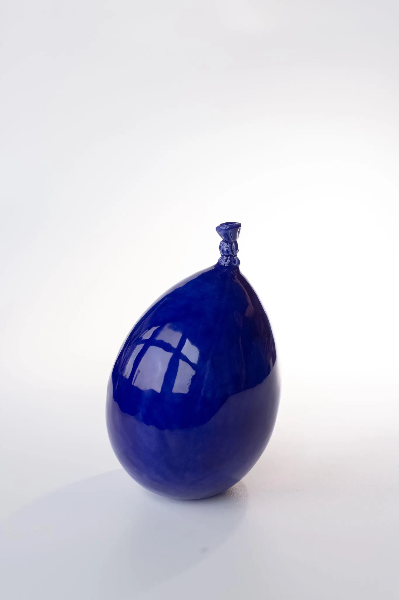
2025 · глина, глазури; литьё, ручная лепка
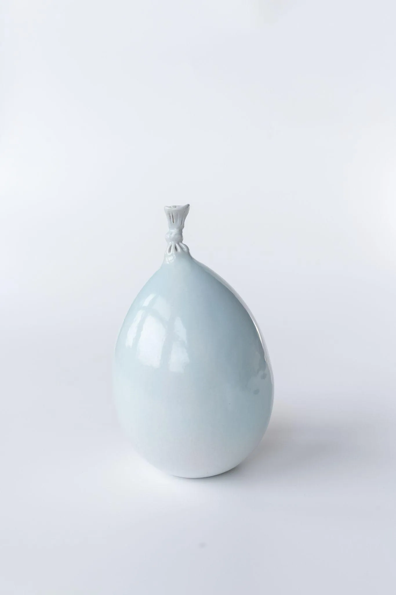
2025 · глина, глазури; литьё, ручная лепка
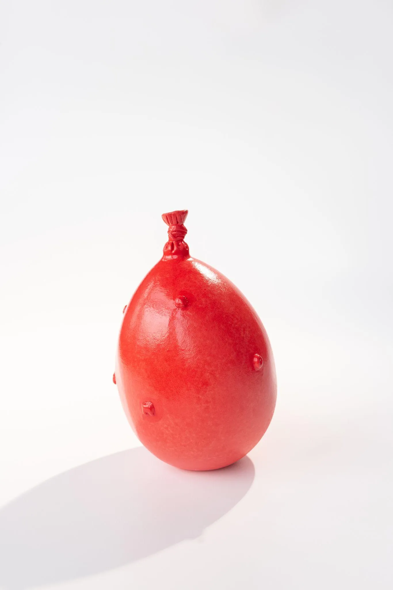
2025 · глина, глазури; литьё, ручная лепка

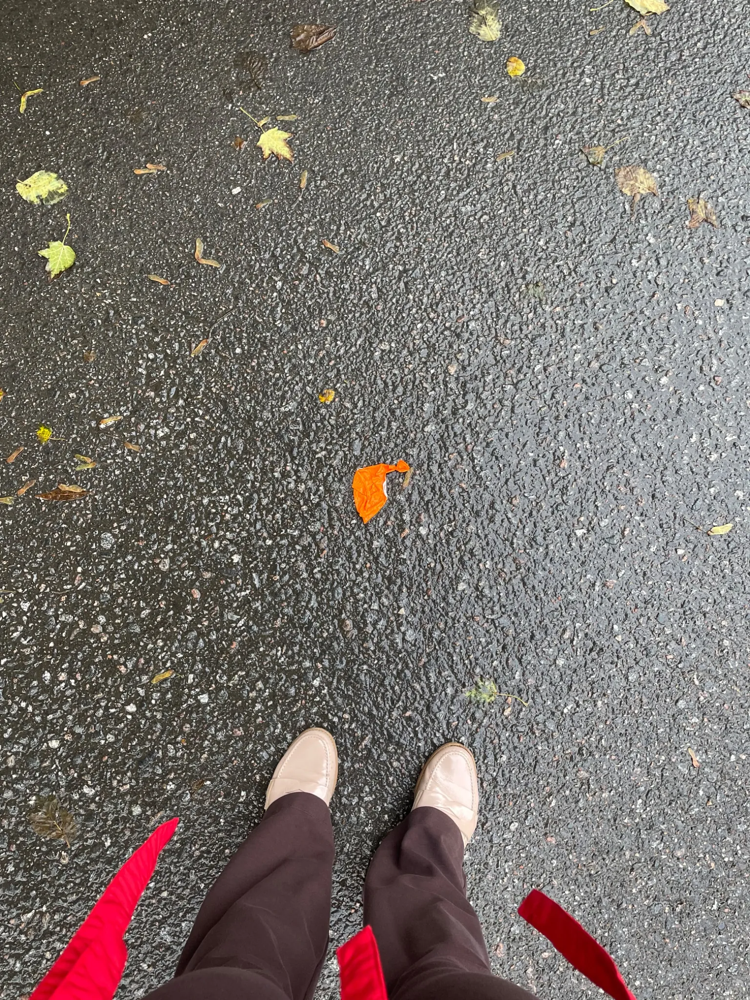
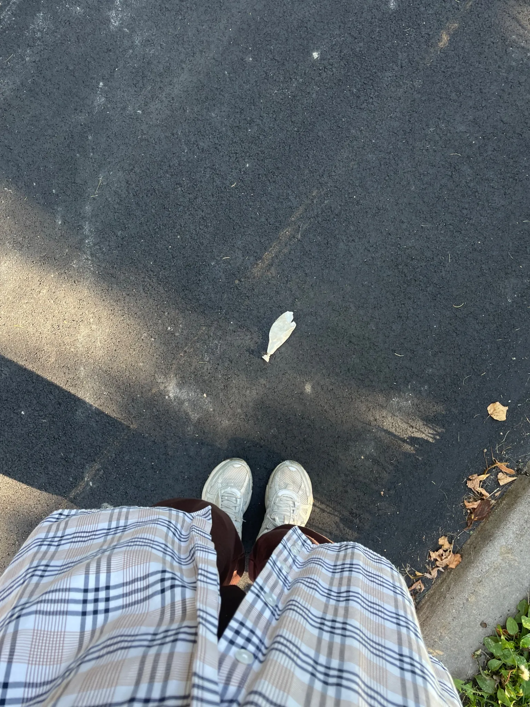
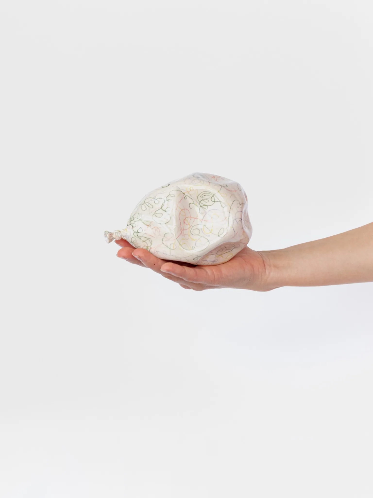
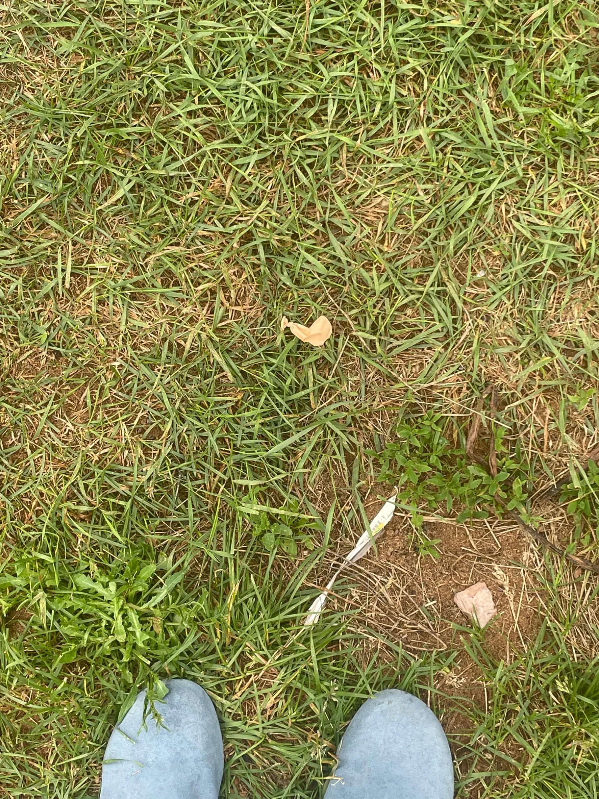
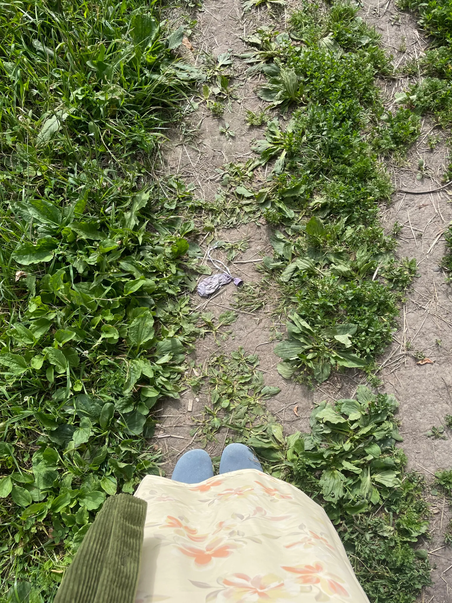
Обновлено: 2026-11-06. Вопросы о покупке — Telegram @simplayart, Instagram @sim.play.art.